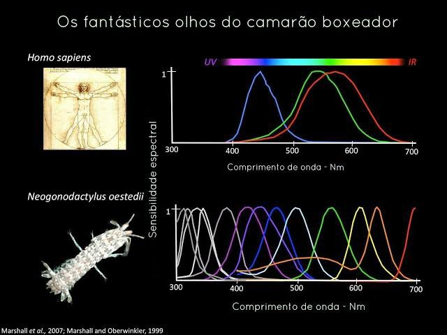
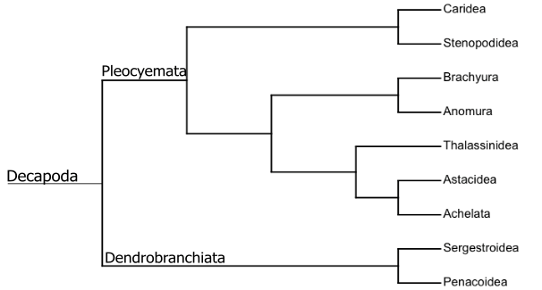

Fatos sobre o Stomatopoda
Do que se trata

Os estomatópodes são predadores ativos. presentam uma grande variação de tamanho, que pode ir de poucos milímetros até aproximadamente 40 cm nas espécies maiores. Eles vivem em fundo consolidado, lodoso ou ainda arenoso, onde cavam seus buracos ou aproveitam-se dos orifícios deixados por outros animais para neles se instalar. São animais exclusivamente carnívoros, alimentando-se de camarões, caranguejos, moluscos, peixes e até mesmo outros da mesma ordem. As maiores e esmagadoras, tais como Odontodactylus scyllarus, são capazes de desferir um dos mais rápidos e vilentos golpes do reino animal.
One Punch Man do mundo animal

Um dos mais rápidos e violentos golpes do reino animal, um soco que pode apresentar a velocidade de um tiro calibre .22 (equivalente a 720 km/h) e uma pressão de impacto de 600 N/cm². Essa força esmagadora é a responsável pelo seu título de "One Punch Man do mundo animal" e é capaz de facilmente quebrar a carapaça de um caranguejo, as conchas duras e calcificadas de gastrópodes ou até mesmo quebrar o vidro reforçado de um aquário.
Tom Clancy's Splinter Cell inveja
Esses animais possuem o mais complexo sistema de visão de
cores do mundo animal, pois enxergam 12 cores primárias,
correspondentes aos 12 pigmentos distintos presentes em sua
retina.
O sistema de visão dos estomatópodes possui doze cones
sensíveis à luz e outros quatro que filtram a luz (16 cones no
total), o que lhes permite ver cores polarizadas e imagens
multiespectrais.
Como cada cone pode ver cerca de 100 cores, os estomatópodes
são capazes de ver 1024 cores, ou seja, 1 septilhão de cores.
Em comparação, o olho humano vê 106 cores, ou seja, 1 milhão
de cores apenas. A visão dos estomatópodes é sensível
à luz ultravioleta, mas ainda é desconhecido se ela pode
distinguir a luz infravermelha.
Grandes Familias
- Indosquillidae
- Erythrosquillidae
- Alainosquillidae
- Eurysquillidae
- Gonodactylidae
- Hemisquillidae
- Odontodactylidae
- Protosquillidae
- Pseudosquillidae
- Takuidae
- Coronididae
- Heterosquillidae
- Lysiosquillidae
- Nannosquillidae
- Tetrasquillidae
- Harpiosquillidae
- Squillidae
- Parasquillidae
- Sculdidae